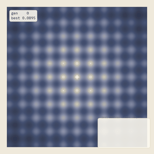
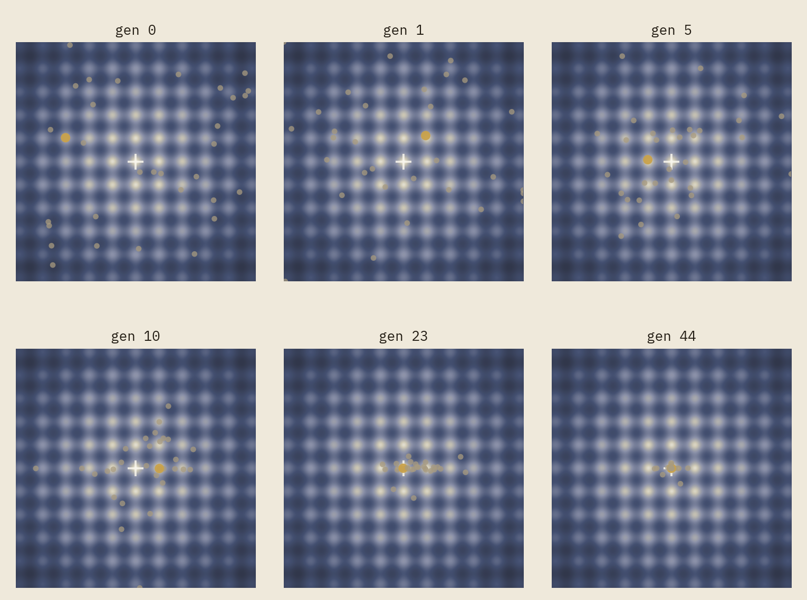
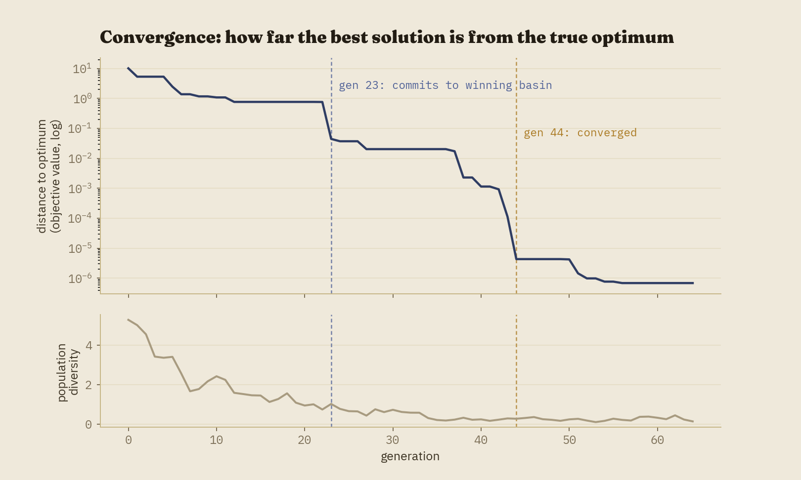
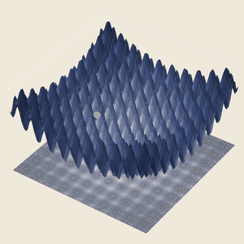

A genetic algorithm doesn't know calculus. It cannot take a derivative, has no notion of curvature, and no idea which direction is "downhill." All it can do is generate candidate solutions, keep the ones that score well, and recombine and jitter them into the next batch. That this simple, deliberately ignorant procedure can reliably find the minimum of a function with a hundred false answers scattered across it is either a pleasant coincidence or the entire point of the algorithm, depending on how you look at it.
This post walks through a from-scratch implementation of a real-valued genetic algorithm searching the Rastrigin function, a standard and deliberately brutal benchmark landscape. Every part of the visualization below — the colors, the timing, the camera, even which of thirty random seeds to use — was chosen for one specific reason: to make visible a population that commits to the wrong answer, notices, and finds its way to the right one anyway.

The rest of this post explains how that happens, and why it takes 44 generations rather than 15 — which, it turns out, was a deliberate design decision, not a property of the algorithm itself.
The idea, before the machinery
Strip away the biological metaphor for a moment and a genetic algorithm is answering a fairly narrow question: given a function you can evaluate but can't differentiate, and a search space you suspect is full of misleading local answers, how do you find the best one using nothing but repeated evaluation and a source of randomness? This is not a hypothetical constraint. Plenty of real objective functions are black boxes in exactly this sense — the output of a physical simulation, the result of an A/B test, the score of a scheduling heuristic against a messy real calendar — where you can ask "how good is this candidate?" but have no way to ask "which direction improves it?"
Gradient-based methods are usually the right tool when a gradient exists and the landscape is well-behaved. Genetic algorithms earn their keep in the cases where that assumption fails: engineering design parameters that interact non-smoothly, combinatorial schedules, hyperparameter spaces peppered with irrelevant local optima. The Rastrigin function used throughout this post is a stylized, extreme version of that situation — its local optima are so regular and so numerous that almost any search strategy weaker than "systematically avoid getting distracted" will fail on it.
From biology to coordinates
A genetic algorithm maintains a population of candidate solutions across generations. Each candidate — a chromosome — is scored by a fitness function; fitter candidates are more likely to become parents (selection); pairs of parents combine their genes to produce offspring (crossover); offspring genes are occasionally perturbed at random (mutation); and the single best candidate is always carried forward unchanged (elitism), so the population's best-ever answer can never be accidentally lost.
The classic textbook GA encodes each chromosome as a bit string — a holdover from Holland's original formulation, and a natural fit for combinatorial problems. This implementation uses a more direct encoding: each individual is a point \((x, y)\) in the search domain, full stop. The two coordinates are the two genes. This is partly a simplicity choice and partly a visualization one — a real-valued chromosome can be plotted exactly where it lives on the fitness landscape, which is the whole premise of watching the population move.
The productive tension in all of this is exploration versus exploitation. Selection pressure and elitism pull the population toward what already looks good; mutation and crossover diversity push it toward looking somewhere else. Too much of the former and the population prematurely converges — collapses onto a local optimum before finding the global one, with no mutation left strong enough to escape it. Too much of the latter and the population never settles on anything. Every interesting design decision in this project, on both the algorithm side and the visualization side, is really a decision about where to sit on that line.
The loop, formally
Concretely, each generation does the following:
- Evaluate the fitness of every individual in the population.
- Select parents via tournament selection: repeatedly sample a small number of distinct individuals at random and keep the fittest of the group.
- Produce offspring via BLX-α blend crossover between pairs of parents.
- Mutate offspring genes with Gaussian noise, at a fixed per-gene probability.
- Copy the current best individual(s) into the next generation unchanged (elitism).
- Repeat until a generation budget is exhausted or the population's diversity collapses below a floor.
For a chromosome \((x,y)\) and Rastrigin objective \(f\) (lower is better), fitness is \(1/(1+f(x,y))\) — strictly positive and bounded above by 1, which keeps the numbers well-behaved without changing which candidate is better than which. A tournament of size \(k\) drawn without replacement from a population of \(n\) always returns the single fittest individual when \(k=n\); the algorithm here uses \(k=2\), which is weak selection pressure by design (see below).
One deliberate choice worth calling out: crossover here is BLX-α blend crossover, which samples a child's genes from an interval that extends slightly beyond the two parents' values rather than strictly between them. Two similar parents under naive midpoint crossover can only ever produce similar children — BLX-α is what lets crossover itself contribute exploration, instead of leaving all of it to mutation.
A landscape engineered to be hard
The Rastrigin function is a standard optimization benchmark, defined for \(n\) dimensions as
\[ f(\mathbf{x}) = A n + \sum_{i=1}^{n} \left[x_i^2 - A\cos(2\pi x_i)\right], \qquad A = 10, \]
evaluated here over \([-5.12, 5.12]^2\), the domain used throughout the optimization literature since Rastrigin's original 1974 formulation. The quadratic term creates one large bowl centered at the true global minimum, \(\mathbf{x}=\mathbf{0}\); the cosine term ripples that bowl into roughly a hundred regularly-spaced local optima across the visible domain. It was chosen for this post specifically because the ripples are regular — premature convergence isn't a rare edge case here, it's the default outcome unless the population is actively fighting it.
The first working version of this project converged in around 15-18 generations, regardless of which random seed it started from. That sounds like a success, and numerically it was — but as an animation it was a poor story: thirty-odd further generations of a population sitting almost perfectly still. The population wasn't struggling with anything; the selection pressure and mutation schedule were simply strong enough to solve this particular landscape almost immediately. Slowing that down on purpose, without breaking the algorithm's actual correctness, took a small sweep across hyperparameters — weaker tournament pressure, fewer elites, slower mutation decay — evaluated across 30 random seeds each, looking for a configuration that converged reliably but only after real search.
That sweep also surfaced a genuine bug, which is worth being honest about rather than glossing over: an earlier version of tournament selection sampled its \(k\) contenders with replacement, which very occasionally lets a single individual be compared against itself. Fixing it to sample without replacement — the textbook-correct definition — changed the algorithm's random-number consumption enough that every previously-tuned seed had to be re-swept. The corrected version turned out to be slightly more selective on average (a tournament can no longer accidentally degrade into a non-contest), which nudged reliability from a suspiciously round 100% down to a more believable 28 out of 30 seeds converging within a generous 120-generation budget. The other two lock permanently onto a local optimum — a real failure mode of this configuration, reported rather than hidden, and a useful reminder that "genetic algorithms find the global optimum" is a tendency, not a guarantee.
The seed used throughout this post is one of the 28 reliable ones, hand-picked for a particularly rich trajectory: the population visits four distinct local optima — near \((-3,1)\), \((1,1)\), \((-1,0)\), and \((1,0)\) — before committing to the true basin around the origin at generation 23, then spends roughly twenty more generations quietly refining that answer to high precision.

Reading the animation
One color legend is used consistently across every visualization in this post, and will carry over to the Ant Colony Optimization and Simulated Annealing posts later in this series: muted ink dots are ordinary individuals, gold is the current elite, and a navy line traces the running-best solution's path. A small monospace readout tracks the generation number and best fitness; beneath it, two thin sparklines track best fitness and population diversity over time, so a decreasing-diversity trend is visible without needing a separate chart.
For a more legible version of that same signal, here is the full run plotted directly:

The log scale matters here for a reason beyond aesthetics: once fitness is within rounding distance of its maximum, a linear plot goes visually flat and hides exactly the fine-tuning behavior worth explaining — that finding the right neighborhood (generation 23) and precisely converging within it (generation 44) are two different achievements, happening at two different rates.
In three dimensions
The 2D story above is already complete on its own; a third dimension doesn't add new information so much as it adds a different kind of understanding. Being told a landscape has "a hundred local optima" and watching a surface actually rise and fall a hundred times are not the same experience.

This piece also surfaced a second genuine bug worth mentioning, since it's a common
enough trap that it's worth naming: matplotlib's 3D toolkit sorts artists by distance
from the camera automatically by default, which reliably hides a marker behind
a surface even when the marker's own coordinate sits clearly above it — a well-known
limitation of automatic z-ordering when mixing surface and point artists. The fix is a
single flag (ax.computed_zorder = False) that switches to explicit,
per-artist ordering, but until that flag is set the marker is invisible in
every frame, silently. It is the kind of bug that produces no error and no
warning — just an empty-looking render — which made it a genuinely useful reminder to
actually inspect pixels rather than trust that a plotting call which raised no
exception did what it was asked.
Implementation notes
The repository is organized so that the algorithm (src/ga/), the landscape
(src/landscape/), and the visualization layer (src/viz/) don't
know about each other's internals — the GA produces a plain record of every
generation's state, and the renderer consumes that record independently. That
separation is what let the 3D animation reuse the exact same streaming export pipeline
as the 2D one, and it's what will let the upcoming Ant Colony Optimization and Simulated
Annealing projects reuse this project's color palette and typography unchanged.
Every stochastic step draws from a single seeded numpy.random.Generator,
so the same seed reproduces an identical run bit-for-bit; every figure and animation in
this post was generated directly by the scripts in the repository, with no manual
editing of the output.
Computational complexity
Per generation, the dominant costs are: evaluating fitness for the whole population (\(O(n)\) evaluations, each \(O(d)\) for a \(d\)-dimensional Rastrigin instance — \(O(1)\) here, since \(d=2\) is fixed), tournament selection (\(O(n)\) tournaments, each \(O(k)\)), and crossover/mutation (\(O(n)\), one pass per offspring gene). Over \(g\) generations, total work is \(O(g \cdot n)\) for this fixed-dimension landscape — cheap enough that the entire 65-generation run underlying every figure in this post completes in under a tenth of a second; essentially all of the wall-clock time in this project went into rendering, not searching.
Strengths and weaknesses
The strengths are exactly what motivated using a GA here in the first place: it needs no derivative and no assumption of smoothness or convexity, it handles a landscape riddled with local optima far more gracefully than local search alone, fitness evaluations are trivially parallelizable since individuals are scored independently, and elitism guarantees the best-ever answer is monotonically non-decreasing even though the underlying search is stochastic and can and does wander.
The weaknesses are equally real. there is no general convergence guarantee (2 of the 30 seeds swept here never find the global optimum at all), and behavior is highly sensitive to hyperparameters that have no principled default — the exact same algorithm on the exact same landscape converges in 15 generations or 44 depending on tournament size and mutation decay alone. GAs also don't scale gracefully to high dimensions, where population-based coverage of the search space becomes exponentially harder to maintain. None of this makes the algorithm a poor choice for the problems it's suited to — it makes it a poor default choice for problems where a cheaper method (gradient descent, in particular) already applies.
Extensions
A few natural directions beyond what's implemented here: a discrete, permutation-based variant (a small Traveling Salesman instance is the classic choice) as a second animation in the same visual language; a multi-objective, NSGA-II-style extension with an animated Pareto front; an island model with several sub-populations and occasional migration between them, which visualizes nicely as multiple independent scatter clouds with rare exchange events; and an adaptive mutation schedule driven by measured diversity rather than a fixed decay curve, which would remove the single most hand-tuned parameter in the current implementation.
Code and reproducibility
A full reference implementation — the algorithm, every visualization module, the render scripts used to produce every figure and animation in this post, and a pytest suite covering both the algorithm's invariants and a regression check on the tuned default configuration — is available at github.com/akavosi/genetic-algorithm-evolution.
References
- Holland, J. H. (1975). Adaptation in Natural and Artificial Systems. University of Michigan Press.
- Goldberg, D. E. (1989). Genetic Algorithms in Search, Optimization, and Machine Learning. Addison-Wesley.
- De Jong, K. A. (1975). An Analysis of the Behavior of a Class of Genetic Adaptive Systems. PhD thesis, University of Michigan.
- Rastrigin, L. A. (1974). Systems of Extremal Control. Nauka, Moscow.